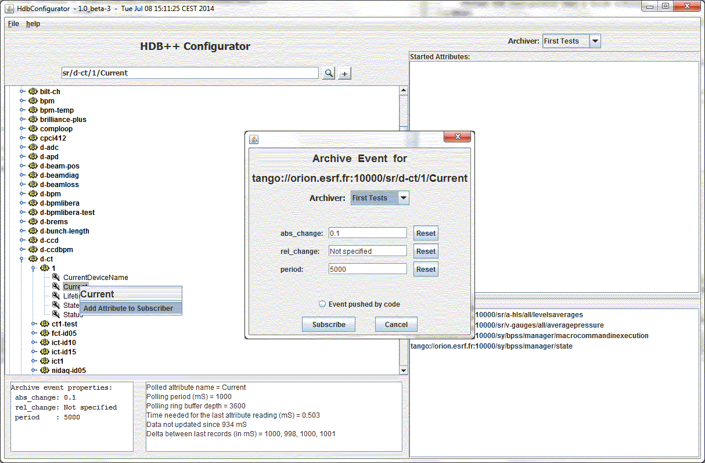
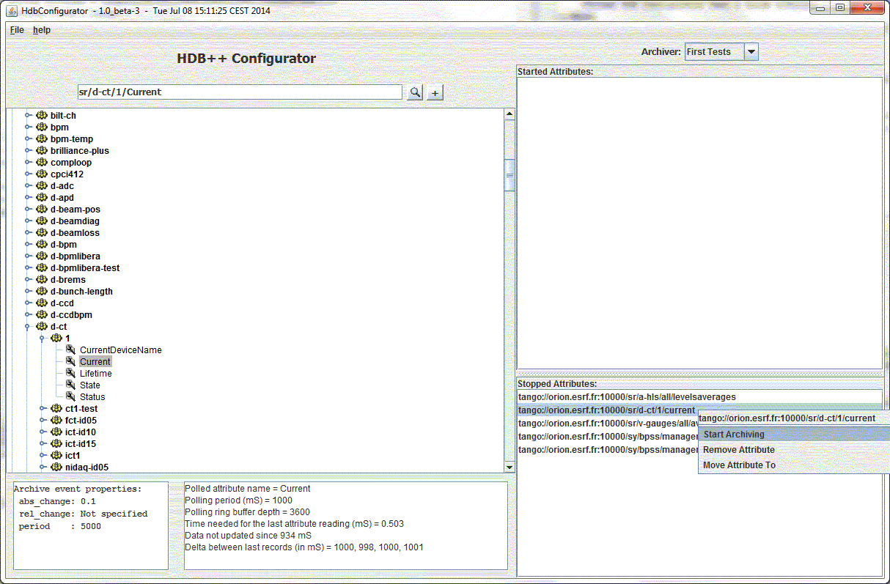

Introduction to HDB++ Configurator
Goal:
- The first goal of this tool is to add attributes to archiver.
- The second goal is to start and stop attributes archiving .
Start up:
-
This tool is a java Tango GUI.
That means that the $CLASSPATH needs:
- TangORB.jar
- ATKWidget.jar
- ATKCore.jar
- Jive.jar
- jhdcpp.jar
-
It needs the configurator manager device name as an environment variable:
e.g: export HdbManager=tango/hdb/manager
-
Then Start the java class:
java org.tango.hdbcpp.configurator.HdbConfigurator
Principle:
-
An attribute could be simply added to a subscriber
by a simple selection in a JTree (jive like).
Select the expected archiver to assign the attribute.
Set the archiving event properties if needed or set the
Event push by code button if it the case.

-
When the attribute has been added to and archiver, the archiving could be easily started.
